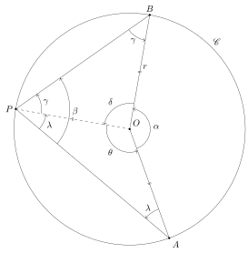
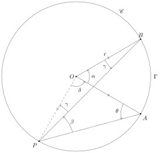
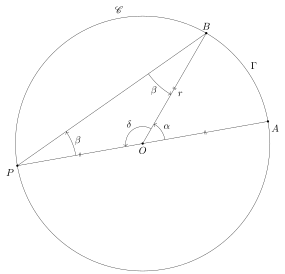
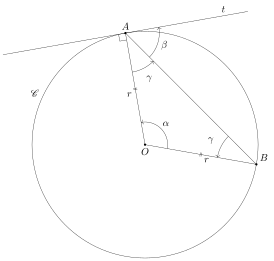
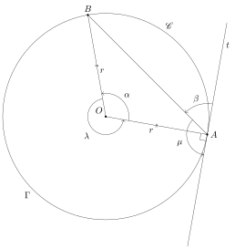
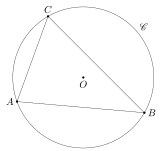

Eclats de vers : Matemat : Angles et cercles
Table des matières
1. Angle au centre et angle inscrit
1.1. Première disposition
Le schéma ci-dessous représente un cercle \(\mathscr{C}\) de centre \(O\) et de rayon \(r\) :

Nous avons tenu compte dans le schéma des propriétés des angles des triangles isocèles.
Nous allons examiner la relation entre l’angle au centre :
\[ \alpha = \abs{\angleflex{AOB}} \]
et l’angle inscrit :
\[ \beta = \abs{\angleflex{APB}} \]
Remarquons que ces deux angles interceptent le même arc de cercle \(\Gamma = \arcdecercle{AB}\).
Les segments \([O,A]\), \([O,B]\) et \([O,P]\) étant des rayons du cercle, on a :
\[ r = \abs{OA} = \abs{OB} = \abs{OP} \]
La somme des angles dans le triangle \(POB\) nous donne :
\[ 2 \ \gamma + \delta = 180^\circ \]
Isolons \(\delta\) :
\[ \delta = 180^\circ - 2 \ \gamma \]
La somme des angles dans le triangle \(PAO\) nous donne :
\[ 2 \ \lambda + \theta = 180^\circ \]
ou encore :
\[ \theta = 180^\circ - 2 \ \lambda \]
Comme les angles \(\alpha\), \(\delta\) et \(\theta\) forment ensemble un tour complet (un angle plein), on a :
\[ \alpha + \delta + \theta = 360^\circ \]
En tenant compte des résultats précédents, cette équation devient :
\[ \alpha + (180^\circ - 2 \ \gamma) + (180^\circ - 2 \ \lambda) = 360^\circ \]
Simplifions les 180° et 360° :
\[ \alpha - 2 \ \gamma - 2 \ \lambda = 0 \]
isolons \(\alpha\) :
\[ \alpha = 2 \ \gamma + 2 \ \lambda \]
et mettons les \(2\) en évidence :
\[ \alpha = 2 \ (\gamma + \lambda) \]
Comme :
\[ \beta = \gamma + \lambda \]
cette équation devient :
\[ \alpha = 2 \ \beta \]
L’amplitude de l’angle au centre vaut le double de l’amplitude de l’angle inscrit.
1.2. Deuxième disposition
Le schéma ci-dessous représente un cercle \(\mathscr{C}\) de centre \(O\) et de rayon \(r\) :

Nous avons tenu compte dans le schéma des propriétés des angles des triangles isocèles.
Nous allons examiner la relation entre l’angle au centre \(\alpha\) et l’angle inscrit \(\beta\). Remarquons que ces deux angles interceptent le même arc de cercle \(\Gamma = \arcdecercle{AB}\).
Les segments \([O,A]\), \([O,B]\) et \([O,P]\) étant des rayons du cercle, on a :
\[ r = \abs{OA} = \abs{OB} = \abs{OP} \]
Le triangle \(PAO\) étant isocèle, on a aussi :
\[ \theta = \beta + \gamma \]
La somme des angles dans le triangle \(PAO\) nous donne :
\[ \beta + \gamma + \theta + \delta = 180^\circ \]
En tenant compte de la relation précédente, cette équation devient :
\[ \beta + \gamma + \beta + \gamma + \delta = 180^\circ \]
ou encore :
\[ 2 \ \beta + 2 \ \gamma + \delta = 180^\circ \]
La somme des angles dans le triangle \(PBO\) nous donne :
\[ 2 \ \gamma + \alpha + \delta = 180^\circ \]
En soustrayant cette dernière équation de la précédente, on obtient :
\[ 2 \ \beta + 2 \ \gamma + \delta - 2 \ \gamma - \alpha - \delta = 0 \]
c’est-à-dire :
\[ 2 \ \beta - \alpha = 0 \]
Isolons \(\alpha\) :
\[ \alpha = 2 \ \beta \]
Ici aussi, l’amplitude de l’angle au centre vaut le double de l’amplitude de l’angle inscrit.
1.3. Troisième disposition
Le schéma ci-dessous représente un cercle \(\mathscr{C}\) de centre \(O\) et de rayon \(r\) :

Nous avons tenu compte dans le schéma des propriétés des angles des triangles isocèles.
Nous allons examiner la relation entre l’angle au centre \(\alpha\) et l’angle inscrit \(\beta\). Remarquons que ces deux angles interceptent le même arc de cercle \(\Gamma = \arcdecercle{AB}\).
Les angles \(\alpha\) et \(\delta\) forment ensemble un angle plat :
\[ \alpha + \delta = 180^\circ \]
Isolons \(\delta\) :
\[ \delta = 180^\circ - \alpha \]
La somme des angles du triangle \(POB\) nous donne :
\[ 2 \ \beta + \delta = 180^\circ \]
En tenant compte des résultats précédents, cette équation devient :
\[ 2 \ \beta + 180^\circ - \alpha = 180^\circ \]
Simplifions les 180° :
\[ 2 \ \beta - \alpha = 0 \]
Isolons \(\alpha\) :
\[ \alpha = 2 \ \beta \]
Ici aussi, l’amplitude de l’angle au centre vaut le double de l’amplitude de l’angle inscrit.
1.4. Conclusion
Lorsqu’un angle au centre \(\alpha\) et un angle inscrit \(\beta\) interceptent le même arc de cercle \(\Gamma = \arcdecercle{AB}\), l’angle au centre vaut le double de l’angle inscrit :
\[ \alpha = 2 \ \beta \]
ce qui revient à dire que l’angle inscrit vaut la moitié de l’angle au centre :
\[ \beta = \frac{\alpha}{2} \]
1.5. Corollaire
Soit deux angles inscrits \(\beta\) et \(\gamma\) qui interceptent le même arc de cercle \(\Gamma = \arcdecercle{AB}\). On peut choisir un angle au centre \(\alpha\) qui intercepte également \(\Gamma\). On a alors :
\[ \beta = \frac{\alpha}{2} = \gamma \]
Les deux angles inscrits sont donc de même amplitude.
2. Angle au centre et angle tangent
2.1. Première disposition
Soit un cercle \(\mathscr{C}\) de centre \(O\) et de rayon \(r\), un point \(A \in \mathscr{C}\) et une droite \(t\) tangente au cercle \(\mathscr{C}\) au point \(A\). Dans le schéma ci-dessous, l’angle au centre \(\alpha\) possède les mêmes points d’intersections avec le cercle que l’angle tangent \(\beta\) :

Nous avons tenu compte dans le schéma des propriétés des angles des les triangles isocèles.
Nous allons examiner la relation entre l’angle au centre \(\alpha\) et l’angle tangent \(\beta\). Remarquons que ces deux angles interceptent le même arc de cercle \(\Gamma = \arcdecercle{AB}\).
La somme des angles dans le triangle \(OAB\) nous donne :
\[ \alpha + 2 \ \gamma = 180^\circ \]
Isolons \(\alpha\) :
\[ \alpha = 180^\circ - 2 \ \gamma \]
Comme la tangente \(t\) est perpendiculaire au rayon \([O,A]\), on a :
\[ \beta + \gamma = 90^\circ \]
Isolons \(\gamma\) :
\[ \gamma = 90^\circ - \beta \]
Substituons cette expression de \(\gamma\) dans la relation impliquant \(\alpha\) :
\[ \alpha = 180^\circ - 2 \ (90^\circ - \beta) \]
Distribuons :
\[ \alpha = 180^\circ - 180^\circ + 2 \ \beta \]
En simplifiant, on obtient finalement :
\[ \alpha = 2 \ \beta \]
2.2. Seconde disposition
Nous reprenons les notations de la section précédente :

Nous allons examiner la relation entre l’angle au centre \(\lambda\) et l’angle tangent \(\mu\). Remarquons que ces deux angles interceptent le même arc de cercle \(\Gamma = \arcdecercle{BA}\).
Nous avons déjà vu que : . \[ \alpha = 2 \ \beta \]
Comme \(\alpha\) et \(\lambda\) forment un tour complet, on a :
\[ \lambda = 360^\circ - \alpha \]
ou encore :
\[ \lambda = 360^\circ - 2 \ \beta \]
Les angles \(\beta\) et \(\mu\) forment ensemble un demi-tour :
\[ \beta = 180^\circ - \mu \]
Remplaçons \(\beta\) par son expression dans la relation impliquant \(\lambda\) :
\[ \lambda = 360^\circ - 2 \ (180^\circ - \mu) \]
Distribuons :
\[ \lambda = 360^\circ - 360^\circ + 2 \ \mu \]
En simplifiant, on obtient finalement :
\[ \lambda = 2 \ \mu \]
2.3. Conclusion
Lorsqu’un angle au centre \(\alpha\) et un angle tangent \(\beta\) interceptent le même arc de cercle \(\Gamma\), l’angle au centre vaut le double de l’angle tangent.
On en conclut directement que l’angle tangent vaut la moitié de l’angle au centre.
2.4. Corollaire
Soit deux angles tangents \(\beta\) et \(\gamma\) qui interceptent le même arc de cercle \(\Gamma\). On peut choisir un angle au centre \(\alpha\) qui intercepte également \(\Gamma\). On a alors :
\[ \beta = \frac{\alpha}{2} = \gamma \]
Les deux angles tangents sont donc de même amplitude.
3. Triangle et cercle
3.1. Cercle circonscrit
On dit que le cercle \(\mathscr{C}\) est circonscrit au triangle \(\mathcal{T}\), ou que \(\mathcal{T}\) est inscrit dans \(\mathscr{C}\), si tous les sommets de \(\mathcal{T}\) appartiennent à \(\mathscr{C}\).
Le schéma ci-dessous représente un triangle \(\mathcal{T} = ABC\) et son cercle circonscrit \(\mathscr{C}\) :

3.2. Diamètre comme côté d’un triangle inscrit
Le schéma ci-dessous représente un triangle \(ABC\) dont le côté \([A,B]\) est un diamètre du cercle circonscrit \(\mathscr{C}\) :
L’angle inscrit \(\beta\) intercepte le même arc de cercle \(\Gamma = \arcdecercle{AB}\) que l’angle au centre \(\alpha = \angleflex{AOB}\). Comme les points \(A\), \(O\) et \(B\) sont alignés, l’amplitude de ce dernier vaut 180° et :
\[ \alpha = 180^\circ = 2 \ \beta \]
ou encore :
\[ \beta = \frac{180^\circ}{2} = 90^\circ \]
Le triangle \(ABC\) est donc un triangle rectangle. Comme :
\[ \abs{OA} = \abs{OB} \]
le centre \(O\) du cercle \(\mathscr{C}\) est situé au milieu de l’hypothénuse \([A,B]\).
3.3. Construction d’un triangle rectangle
Nous venons de montrer que tout triangle :
- inscrit dans un cercle
- dont un des côtés est un diamètre du cercle
est un triangle rectangle. Pour construire un triangle rectangle, il suffit donc :
- de tracer un diamètre du cercle
- de choisir un troisième sommet du triangle sur le cercle
- de relier les extrémités du diamètre au troisième sommet choisi